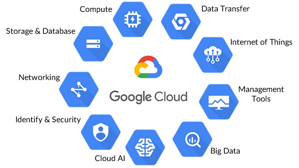

In this section, I will introduce some information about technologies that related to my project idea.
1. Cloud Computing
Cloud Computing image
☠ Definiton of Cloud Computing:
Cloud Computing provides access to a shared box of computing resources, such as computers, storage, applications, and services over the Internet. As a result, you typically pay only for cloud services you use, helping you lower your operating costs, run your infrastructure more efficiently, and scale as your business needs change. Its importance has been clearly confirmed by applications from major companies around the world such as Amazon, Google, etc.
{kind=link}

{kind=link}
Google Cloud
☠ Types of cloud:
Overall, there are 3 types of clouds: Public cloud, Private cloud, and Hybrid cloud which is a combination between a Public cloud and Private cloud. First, let’s talk about the Public cloud. The public cloud is the most popular cloud deployment model used today. Services and applications on Public Cloud are on the same Cloud system. To be more specific, all users will share the same resources, and the service provider will directly manage and protect the data in the cloud. In addition, these services may be free for the general public or offered a pay-per-usage cost. By contrast, a private cloud is an IT infrastructure that can be accessed only by an individual organization, such as all of the business units within a single organization. Finally, Hybrid clouds combine public and private clouds, limit the drawback of those 2 types of cloud above by allowing data and applications to be shared between them. As a result, a hybrid cloud gives business greater flexibility and increases the level of your existing infrastructure as well as security. A simple example is that you manually set up a Private Cloud in Viettel IDC data center (with your physical servers located here). But your Private Cloud resources are too redundant for business needs, so you will use Hybrid Cloud solutions to share the excess resources for Public Cloud to optimize revenue.
3 types of cloud computing.
☠ Types of Cloud Computing Services
Another feature of the cloud that should be highlighted is cloud computing services. Most cloud computing services could be considered into four categories: traditional on-premise service, Infrastructure-as-a-Service (IaaS), Platform-as-a-Service (PaaS), and Software-as-a-Service (SaaS). First, the traditional on-premise service could be considered as customer management including data, application, storage, etc. In other words, everyone could use this kind of service. However, the more people use it, the higher need for maintenance and security increases. Moreover, it will cost lots of budgets to build this service since we have to take care of everything. This problem leads to the second innovation of service called Infrastructure-as-a-Service (IaaS). IaaS market is dominated by technology giants, more than 75%, with customer segments being large and medium enterprises, government, and organizations. It basically provides a completely virtualized computing infrastructure that is delivered and managed over the internet. IaaS provider will take the role of managing physical infrastructure such as servers, data storage space, etc. in the data center. They allow users to fully customize those virtualization resources to suit their specific needs. With IaaS, customers can buy, install, configure, and manage any software they need to use. With high scalability and flexibility, companies only pay for the portion of the virtual resources they use. Some examples for IaaS that could be considered are file-based storage, firewalls provided by Amazon, IBM, Google, and so forth. However, these are only low-level building blocks of the cloud. The higher level which is Platform-as-a-Service (PaaS) refers to cloud computing services that are necessary to build, test, deploy, manage, and update software products. It just uses the same infrastructure as IaaS. But it also provides additional tools such as operating systems, middleware, etc. needed to create software applications. PaaS is designed to make it easier for developers to design, build a web or mobile apps, without worrying about how to set up the underlying infrastructure of services. Finally, Software-as-a-Service (SaaS) is an almost complete software solution. It is created to provide to users directly over the Internet by just registering to use it. With this form of Cloud Computing, it optimizes the requirements for users. Even some SaaS applications are deployed via web browsers, and businesses do not need to struggle with normal installation operations. At this point, the SaaS provider does it all. From managing infrastructure, operating systems, middleware, and data required to deliver the program, ensuring that software is available wherever customers need it. These Cloud Computing applications under SaaS allow businesses to set up and run very quickly. At the same time, the expansion of the operation scale is also happening quickly. Microsoft Office 365, Salesforce, Cisco WebEx, Google Apps, ... are typical examples of this form of Cloud Computing in SaaS format. The difference between SaaS and the rest 2 services is that SaaS is only managed by the vendor while those 2 services IaaS and PaaS are shared between customer management and vendor management. As a result, SaaS is the safest service since it is managed by the only vendor. Nowadays, some of the most concerning problems of cloud computing are security, privacy, and legacy IT systems.
Cloud Computing Services
☠ The State-Of-Art and Applications
We could see the state-of-the-art of this technology in companies. For instance, the iPhone or iPad are two types of high-tech devices that we often use today. In these types of devices, Apple usually provides you with an account called Icloud. This account helps you to store all your personal data for use on the above device. Icloud is one of the products born from the cloud computing platform that we use most often. Also, Google Driver is the storage space that Google provides for its user accounts. The storage space that we use on Google driver to store data every day is also one of the applications of the cloud computing platform. The vast computing power and capabilities of cloud technology allow us to store information about a user's preferences. This can be used to provide customized solutions, messages, and products based on the user's behavior and preferences. Siri, Alexa, and the Google Assistant are all smart bots using natural language based on the cloud. These chatbots take advantage of cloud computing capabilities to provide contextual customer needs and experiences. Every time you say "Hey Siri" or "Ok Google", you should know that there is an AI solution based on cloud technology behind them. Office tools like Microsoft Office 365 and Google Docs use cloud technology, allowing you to use your tools most efficiently over the internet. You can work on your documents, presentations, and spreadsheets from anywhere and anytime. With your data stored in the cloud, you don't have to worry about losing your data in case your device is stolen, lost, or damaged. Cloud technology also helps in document sharing and allows different individuals to work on the same document at the same time. In the future, we need to use a large amount of data and every company will try to become an AI company, which requires lots of Cloud Computing. Hence, maybe someday anything will be a service. For instance, Database as a Service, AI as a Service, Communication as a Service, etc. Instead of focusing on adoption, it is predicted to focus on optimizing cloud or changing Enterprise IT architecture from On-premises to Cloud-based Infrastructure and Applications. The more data we have, the higher level of security we need. With the fast tempo of IT developing nowadays, AI and big data will be 2 fields that could be applied the benefit of Cloud Computing most.
{kind=link}
{kind=link}
☠ Advantages and Disadvantages? Future of Cloud Computing?
The fast modern innovations of cloud will not only transform the IT industry, but it also will everything in our daily life such as the way people work, even how companies operate. Take a look at the musical innovation for example 10 years ago, we listened to music on CDs or cassettes, but now we do not own any music. Instead, we could hear any kinds of music which are stored on the Internet. Similarly, IT companies do not want to own their IT anymore, but they want to consume it as a service. Cloud gives us more opportunities because we are no longer constrained by budgets, and we can try new things for free, and try our ideas at a minimal cost, which changes the way of the business. Since the development of IT increases, the reduction of job position will happen and workers will be replaced by machines, AI, and virtual storage. Imagine if the IT industry is good enough to make a virtual hospital in which we just need to upload our symptom and an AI doctor could predict our disease, what will the human doctor do? Or nowadays we start having an online course on the Internet. As a result, maybe in the following year, the number of teachers probably will decrease as we could access sources on the Internet anytime anywhere. This could lead to no school in the future, which reduces the cost of studying and the cost of government salaries for teachers.

Artificial Intelligent
{kind=link}
There are some disadvantages of Cloud Computing that should be taken into account. For instance, the cloud is made up of physical hardware, and hardware always has its problems. Big clouds - deployed on the Datacenter of Google, MS, Amazon, etc. – although take the highest level of the quality of servers, hard drives, network equipment, Datacenter infrastructure, problems can still occur as usual. To maintain the cloud, we need a lot of electric power. What will happen if the outage occurs? Another problem is cybersecurity. To be more specific, Data that we are using is stored in the Cloud. Where it is located and what the Cloud service party does with it is something we cannot control. For example, Vietnamese businesses store data on the Cloud of Alibaba or use data synchronization services on Xiaomi phones, etc. we have reasons to be concerned about data security. Even Facebook, Google, etc. also exploit user data in many ways, both publicly and stealthily. Another problem is now that hackers are starting to redirect attacks on cloud servers to steal data or sabotage. So there will be still drawbacks of Cloud Computing we should consider before deciding to use it in our life.
2. Cybersecurity / Privacy
Cybersecurity
☠ Definition of Cybersecirity:
Cybersecurity refers to tools we use to protect our information and systems from unauthorized access from outside. The threat of security not only impact on the privacy of clients but also become dangerous to organizations. To be more specific, if an organization is hacked to data and computer systems, the reputation of that organization will decrease, and the information of clients who use their services could be stolen. Another problem is that hackers could make an authorized copy of codes from organizations, which leads to the existence of the company. There are several factors that contribute to security such as Malware (Virus, Worm, Spyware), Password Attack, and DOS/ DDOS (Denial of Services / Distributed DOS). However, the main reason would be users since we cannot control all of the users. Moreover, only a few people have enough knowledge to aware of how vulnerable their information is. To be more specific, people could be hacked their information if they click on an unauthorized link that is sent to their account, surfing to a dangerous website, or carelessly leave their computing services open. An ideal example is Vietnamese hacker Hieu who is emerging on social media recently. In 2013, he used to steal hundreds of millions of U.S.A social security number and get 3 million dollars in a week. By using social security numbers, he not only can sell them to other unauthorized organizations to get money but he also could take advantage of other people's social security numbers to borrow large sums of money from banks, loan services, and so forth.
☠ Some cybersecurity tools:
To prevent those aforementioned problems, security developers come up with several solutions such as Firewalls, Anti-Virus Software and antispyware, Encryption tools, and Anonymity tools.
☠ FIREWALL
Firewall
In term of IT, a Firewall is a technique integrated into the network system to prevent unauthorized access to protect internal information sources as well as limit the intrusion of some unwanted access in case someone wants to attack the system. In other words, the Firewall acts like a police in the network. When all communications go through the firewall, it will decide which one is granted or denied. Firewall deeply analyzes packets, intrusion detection, prevention, and inspection of encrypted traffic. The first example of a Firewall is a Software Firewall that is integrated into the operating system. This type of Firewall includes products such as SunScreen firewall, Check Point NG, IPF, Linux's IPTables, Microsoft ISA Server, etc. Soft firewalls often take on more roles than a hard firewall, which can act as a DNS server or as a DHCP server. Moreover, it is relatively easy and quick to change and upgrade hardware. The second example of a Firewall is Appliance Firewall such as Cisco PIX, WatchGuard Fireboxes, NetScreen firewall, SonicWall Appliances, Nokia firewall, etc., which is integrated on specialized hardware. Finally, an Integrated firewall undertakes other functions such as VPN, detecting and preventing external intrusion, filtering spam, fighting viruses ...
☠ ANTIVIRUS/ANTISPYWARE

antivirus
The next software to counter threatening to security is anti-virus and antispyware. To be more specific, antivirus and antispyware software scan all the files, software, and hardware of your devicé. From there, it will eradicate all programs and malware on the device. It also prevents outside intrusions from threatening your computer. Some advanced software could also create a backup and restore your machine to its original state if any spyware attempts to infiltrate your system, or they are capable of capturing rootkits.
☠ ENCRYPTION
Encryption
Encryption tools are tools that encrypt messages, making them unreadable. As a result, even if hackers get encrypted messages, they still can steal the information inside without keys. There are several types of encryption nowadays such as DES, TripleDES, RSA, AES. The safest encryption today is probably AES, which is an asymmetric key algorithm and uses symmetric block ciphers. It includes three main sizes: 128, 192, or 256 bits. Furthermore, there are different encoding rings for each key size. Some ideal encryption tools that could be highlighted are KeePassX, 7zip, Cryptool, etc.
☠ ANONIMITY

Anonimity
Finally, I want to discuss anonymity tools. Whenever you use the Internet, hackers could trace back to your IP, which represents your location. Moreover, they also could hack into your devices to steal information and know who you are. As a result, anonymity tools are created to hide your presence on the Internet such as fake your IP, encrypt your connection on the Internet, etc. The first way to use anonymity tools is a proxy chain, which is a series of proxy that your connection is routed. Hence, you do not connect to the site directly, which makes our locations more challenging to be found. Another solution is the Live Operating System, which can be booted from a Cd or USB Drive. One of the famous Live Operating System is Tail, which directs all traffic through the Tor network. The last one is Tor, which operates by sending your traffic through nodes. So all of your traffics enter through an entry node and then it exits through an exit node
With the fast pace of IT networking nowadays, the more information we have and the more site that we surf on the Internet, the more chance hackers have to access and break our privacy. As a result, we still have to develop our security system as well as create more efficient tools to prevent our sources from those dangerous threats. For instance, we could reduce the threats by integrated modern security tools directly into the security technology platforms of modern organizations. The tools should be able to obtain user identities from a variety of sources, including a VPN, WLAN access controllers, directory servers, email servers, and locked ports. Moreover, we should know who is using applications on our network and who can transmit threats or files, reinforce security policies and improve incident response times, and also must allow policies to safely enable user-based or group-based applications. Another solution is creating a tool with machine learning for identifying websites stealing credentials. If the analysis identifies a website as malicious, the tool will be updated and blocked that website. We should also scan our devices frequently to find if there are any threats in our devices, announce users the threatening websites if they attempt to access them, etc.
Cybersecurity/Privacy is one of the fields that will be always needed more in the future. Hackers' attacks are increasingly modern and sophisticated, leading to more and more people and resources to contribute to building security. It is believed that cybersecurity in the future would be one of the most notable areas for every nation in the world for existence. For an IT student like me, improving knowledge about security is essential in the future both in my life and my career. Furthermore, every company, as well as any activity, needs information security. As a result, understanding cybersecurity/privacy not only helps me to protect myself and reminds people I know to be more cautious when using the internet and electronic devices, but it also helps me to confidently have a useful job opportunity for the commune. Finally, having a perception of cybersecurity helps me protect everyone's information from bad individuals or organizations who want to take advantage of other people's information